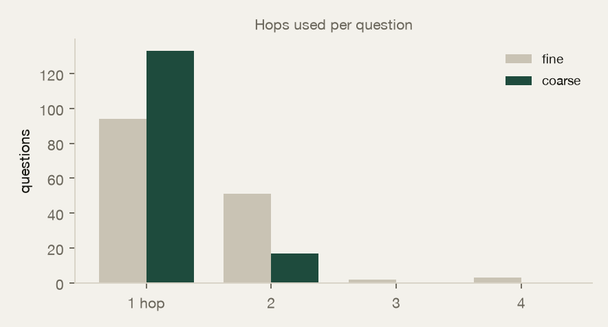
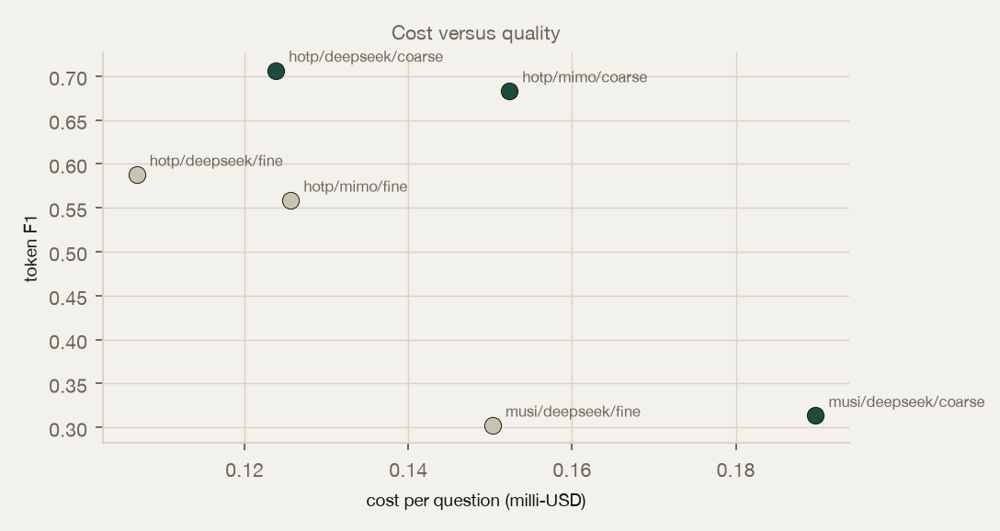

Study report · November 2026
HBC-RAG
Does bounding retrieval into fewer, larger hops improve agentic RAG, and what does the model cache actually contribute? Measured on DeepSeek V4.1 Flash and MiMo V2.6 Flash, scored deterministically, paired by question.
Method
- Corpus: 5,155 paragraphs from HotpotQA and MuSiQue, paragraph-level retrieval, local bge-small embeddings, pgvector HNSW plus Postgres full-text, fused with reciprocal rank fusion.
- Policies:
fineretrieves one chunk per hop with a four-hop cap;coarseretrieves four per hop with a two-hop cap. Same prompt, model, temperature 0 and stopping rule. - Scoring: normalized exact match, token F1, supporting-paragraph recall, hop count, billed cost, latency. No LLM judge in the headline.
- Statistics: paired bootstrap over 10,000 resamples, McNemar on paired exact match.
Where the gap comes from
Failure taxonomy for HotpotQA on DeepSeek. "Evidence full, answer wrong" is a reasoning failure with the right paragraphs in context; "evidence partial" and "no evidence" are retrieval failures.
| policy | n | correct | evidence full, answer wrong | evidence partial | no evidence |
|---|---|---|---|---|---|
| fine | 150 | 64 | 20 | 52 | 14 |
| coarse | 150 | 84 | 52 | 10 | 4 |
Coarse cuts retrieval failures sharply (partial evidence 52 to 10, no evidence 14 to 4) but exposes reader failures (full evidence, wrong answer 20 to 52). Once the right paragraphs are in context, the remaining errors are answer-extraction errors, so the next gain is in the reader prompt rather than in retrieval.

Examples of evidence-complete failures
- The first Latina Supreme Court Justice was part of the majority decision of a case that upheld which previous supreme court case?
gold: Apprendi v. New Jersey · answered: (empty) · hops 1 - What do Eragrostis and Rhexia have in common?
gold: plant genus · answered: both are plant genera · hops 1 - If the Charhki Dadri crash was less dangerous than the Tenerife airport disaster, which occured firat?
gold: On March 27, 1977, two Boeing 747 passenger jets, KLM Flight 4805 and Pan Am Flight 1736, · answered: Tenerife airport disaster · hops 1
Cost versus quality

Novelty: what the cache actually does
Two measurements that the hop-granularity table alone cannot explain.
Gemini Interactions, one stateful chain per trial
For a fixed prefix of roughly four thousand tokens, the cached span stays flat near 4,070 tokens across every hop size tested. The cache share therefore falls as the hop grows, because new tokens are always billed fresh. No 2,050-token incremental threshold was observed on Gemini 3.5 Flash Lite; Gemini 4 Hydrogen returned 503 and timed out during the test window.
| new tokens in hop | prompt tokens | cached tokens | cache share |
|---|---|---|---|
| 200 | 5678 | 2032 | 35.8% |
| 800 | 6255 | 4067 | 65.0% |
| 1500 | 6946 | 4070 | 58.6% |
| 2100 | 7541 | 4072 | 54.0% |
| 3000 | 8449 | 4074 | 48.2% |
OpenCode Go, DeepSeek, identical 19k-token prefix
5 of 6 calls hit the prefix cache. Billed allowance ranged from $0.00004329 to $0.00173565 for identical input, a 40x spread caused by gateway routing rather than by the prompt.
| attempt | prompt | cached | allowance USD |
|---|---|---|---|
| 1 | 19245 | 0 | 0.00173565 |
| 2 | 19245 | 19200 | 0.00004725 |
| 3 | 19245 | 19200 | 0.00004401 |
| 4 | 19245 | 19200 | 0.00004725 |
| 5 | 19245 | 19200 | 0.00004329 |
| 6 | 19245 | 19200 | 0.00004437 |
Related work
Agentic RAG costs up to 3.6x standard RAG (ACL 2026 industry track, arXiv 2601.07711). RAG serving work such as RAG-Stack (arXiv 2608.03487) and RAGPulse (EMNLP 2026 Findings) targets self-hosted clusters and production trace reuse. Evaluation-budget work (arXiv 2610.05034) shows more questions beat more repeats at fixed token spend, which is why this study reports one seed over paired questions rather than repeats. SLA routing work (PROTEUS, arXiv 2601.19402) routes across models, not across hops. This study sits between them: hop granularity on a managed API, deterministic scoring, and a cache probe that measures the mechanism instead of assuming it.
What is not claimed
Concurrency and scaling. Repeat load runs at one request per second produced goodput of 100 percent and 36 percent on identical settings, so the variation between runs is larger than the effect. The open-loop harness is in the repository, but no scaling conclusion is drawn from it.
What is strong, what remains weak
Strong. One-variable comparison, deterministic scoring, paired intervals, a replicated second model, a null result published rather than smoothed, and cache measurements that explain the cost story.
Weak. One seed. Small MuSiQue holdout. The Gemini threshold experiment ran on the wrong model because Hydrogen was unavailable. Prompts are short enough that prefix caching rarely fires, so the study cannot claim cache savings at production context sizes. Concurrency is unproven and excluded.
Resume-ready impact
- Built a hop-bounded agentic RAG study over 5,155 paragraphs and 300 questions: coarse retrieval batches raised F1 by 12 points and supporting-paragraph recall by 30 points while cutting mean hops from 1.43 to 1.11 and p50 from 4.07s to 2.62s.
- Replicated on MiMo V2.6 Flash with F1 0.559 to 0.683 and evidence recall 0.695 to 0.925, confirming the effect is not provider-specific.
- Measured cache behaviour instead of assuming it: a flat 4,070-token cached span across hop sizes on the Gemini Interactions API and a 40x billed-cost spread on identical prefixes through an OpenAI-compatible gateway, with a paired MuSiQue null result reported honestly.
Threats to validity
- One seed per dataset and model. Deltas below two points are noise until replicated.
- MuSiQue uses 50 questions; its intervals are wide.
- MiMo replication uses 100 questions, not the full 150.
- p95 includes gateway 429 retries, so it measures the served path, not model latency alone.
- Gemini 4 Hydrogen was unavailable during the cache threshold test, so that experiment ran on 3.5 Flash Lite.
Reproduce
uv run python scripts/build_corpus.py --hotpot 300 --musique 150 uv run python scripts/run_eval.py --dataset hotpotqa --limit 150 --policies fine,coarse --concurrency 4 uv run python scripts/run_eval.py --dataset musique --limit 50 --policies fine,coarse --concurrency 4 uv run python scripts/run_eval.py --dataset hotpotqa --limit 100 --policies fine,coarse --concurrency 4 --model mimo-v2.6-flash --provider go uv run python scripts/cache_probe.py uv run python scripts/gemini_cache_threshold.py uv run python scripts/report.py